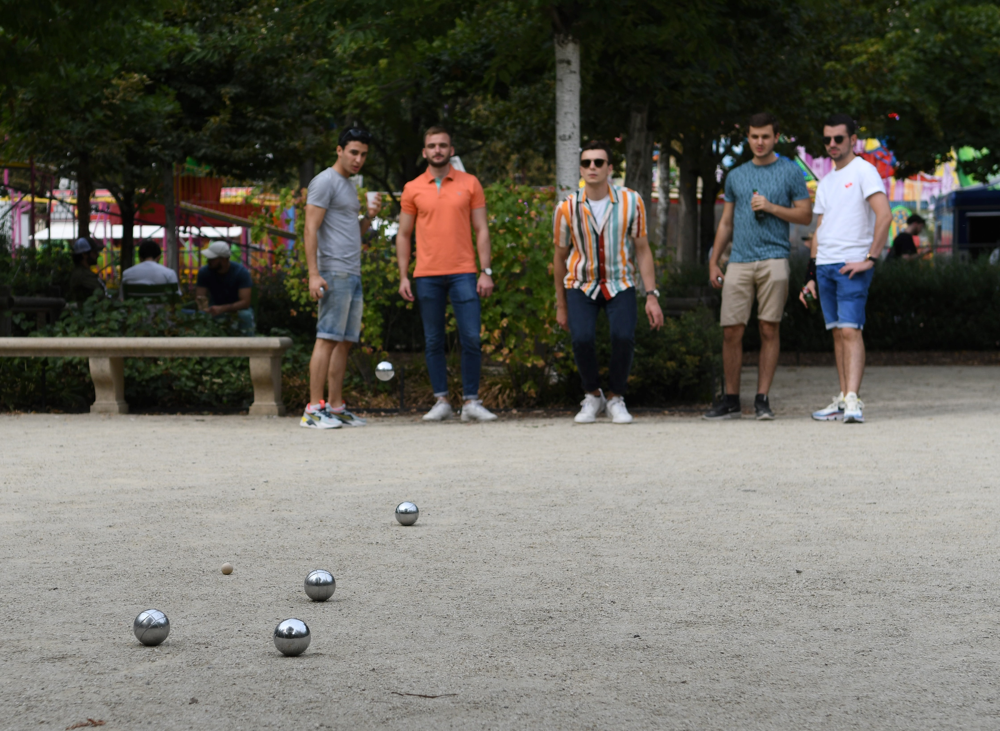

Petanque er en presisjonssport som spilles med kuler i stål som veier rundt 700g. Man spiller ofte 2 mot 2 eller 3 mot 3.
Da har man 6 kuler per lag i begge tilfelle. Man kan også spille 1 mot 1 med da har man 3 kuler hver.
Man skal kaste de nær en "gris" for å samle poeng.
Første man til 13 vinner.
Det er en sport som kan spilles uansett alder og kjønn. Den er opprinelig fra Frankrike men spilles i hele verden.
Petanque oppfinnes i La Ciotat i starten av 1900 tallet. Man pleide å spille en sport som heter "jeu provencal" der man spiller med samme type kuler
men da man må gå mye. Man skal også løpe for å skutte. En dag var en som var handikapet med. For å gjøre det mulig for han å spilleforandret de
reglene litt. Det spille ble senere kalt petanque. Det er faktisk nå mange som er handikapet som driver med denne idretten.
Her er en liten introduksjon film om petanque
Petanque i Norge er ikke veldig stor. Det er en liten miljø med omtrent 300 lisensierte spiller og rundt 1000 som spiller iblant.
Folk kan spille med venner i parker eller kan delta i turnering for de som er lisensiert. Det er omtrent 20 ranking turneringer i løpet
av året som man kan delta i. Noen av de er NM. Der kan man delta i Norgemesterskap i trippet, dobbel, singel, dobbel mixte, trippel mixte.
Petanque spilles i hele verden. Eneste som ikke spiller så mye er sør amerikanske. De regioner der man spiller mest er vest Europa, sør-øst Asia,
nord Africa og Madagascar. Det er mange store turneringer i alle disse land. Den største av alle er sikkert "Marseillaisen" som spilles i Marseille i
Frankrike der rundt 3000 lag deltar hvert år. Mange av de er lag utenlandske lag. Det er også arransjert hvert år verdens mesterskap. Det finnes
verdens mersterskap i trippel, dobbel, singel og dobbel mixt. En annen konkkuranse som er ganske stor er Europa mesterskap for kluber.
Det er som en "Champions league" som spilles i petanque.
Reglene er ikke veldig komplisert. Man spiller flere omganger inntil et lag når 13 poeng.
Man trekker først hvem som skal starte. Første man kaster gris mellom 6 og 10 meter. Deretter kaster
samme spiller en kule så nær grisen som mulig. Etter det er det laget som ikke har det nærmeste kule som skal spille. Man får
så mange poeng som man har kuler nærmere gris en motstander sin beste kule. Kun det laget med nærmeste kule kan få poeng.
Så fortsetter man og lage som fikk poeng siste omgang starter å kaste gris og første kule, osv.
Det er mange små regler som ikke er så viktig om man ikke deltar veldig aktiv. Disse avanserte reglene kan
dere finne på denne linken her.
reglene for petanque
Go back to the menu